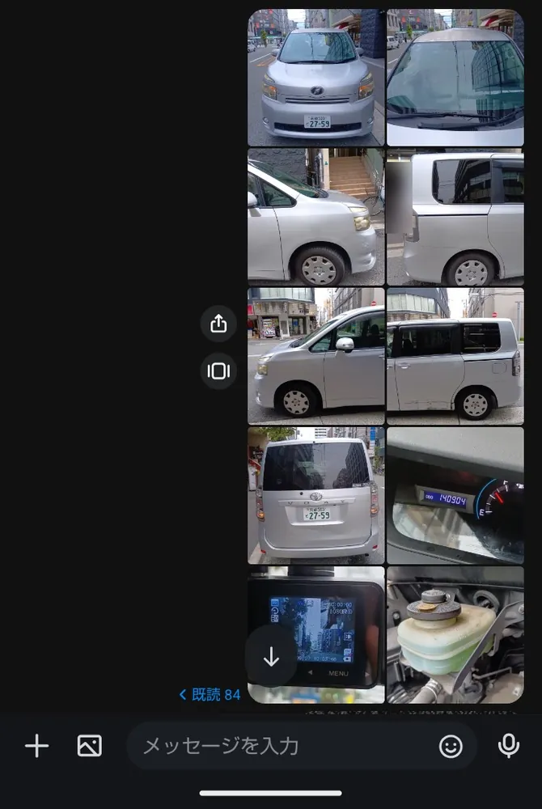

アルバイトスタッフ用 ／ 毎月7日・21日
傷やひびを見つけたら、その場所の写真も撮って、LINE WORKSで拠点の担当者（写真の送り先）にすぐ伝えてください。
1台あたりの枚数です。ドラレコがない車は、ドラレコの写真がないので1枚少なくなります。写真を押すと大きく見られます。
LINE WORKSで、拠点の担当者との個別トークに送ります。
LINE WORKSのトーク画面です。左から右、上から下の順に 1枚目 → 10枚目。

自分の拠点を選んでください。全部チェックして名前を書くと、送信ボタンが押せるようになります。
今日は報告日ではありません
報告は毎月7日・21日です。
✓ は送信済みです
① TimeTree（タイムツリー）で予定を見るか、社員に聞いて、その車の予定を確認する
② 使用中などのときは、その車は次の日に回す
③ そのことを、LINE WORKSで拠点の担当者に連絡する
その場所の写真を撮って、LINE WORKSで拠点の担当者にすぐ伝えます。
拠点の担当者（写真の送り先）に聞いてください。